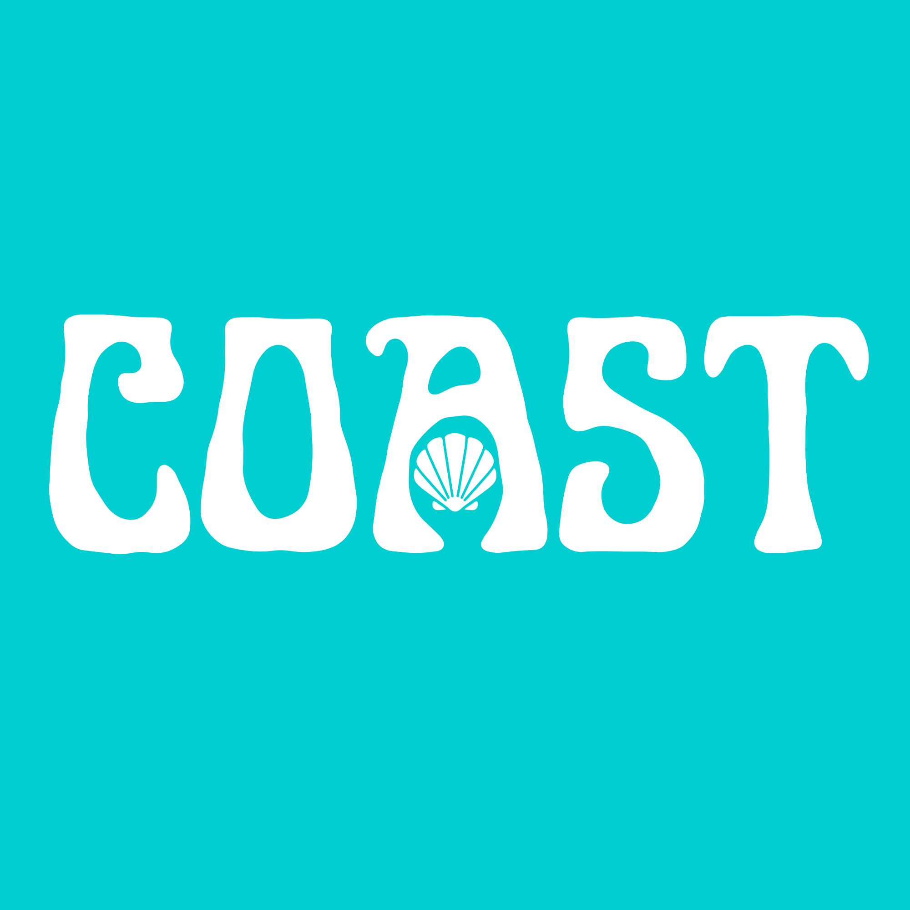
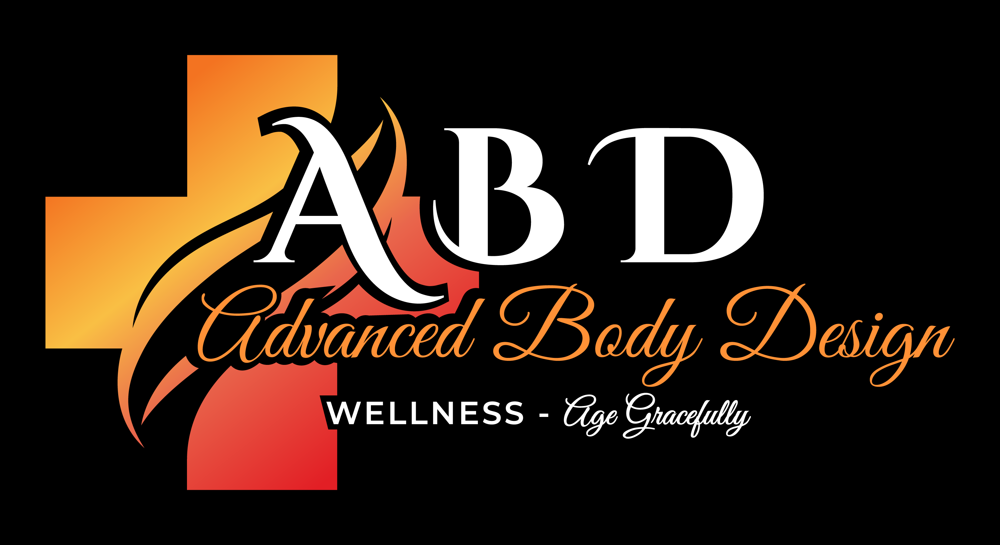

My Projects & Experience
Here are a few projects and experiences that have helped me develop skills in marketing, design, media, and communication.
| Organization | Project / Experience | What I Did | Skills Developed |
|---|---|---|---|
|
 |
Coast |
Worked on branding and marketing concepts while developing creative ideas designed to connect with a target audience. | Branding, marketing strategy, content creation, and design |
|
 |
Advanced Body Design |
Helped design and develop the company website, created standard operating procedures, welcomed customers, and scheduled appointments. | Web design, customer experience, marketing, organization, and communication |
The Pulse |
Studied radio and audio production while gaining hands-on experience with media production, audio equipment, and creating content for broadcast. | Audio production, media, communication, creativity, and technical production |